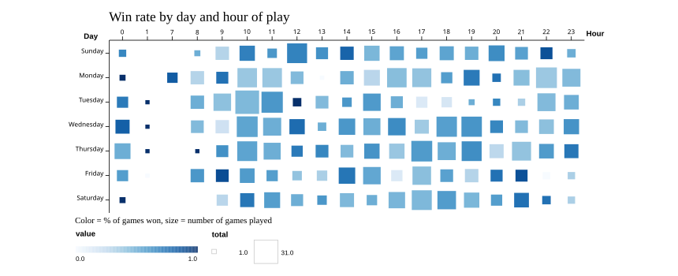

Thibault Fricot — 72.74 Visualización de Información, ITBA
I started playing rapid chess seriously in August 2025. A year later I pulled every game off Chess.com through their public API: 1,353 games.
I stopped playing in January and started again at the end of May. That gap turned out to be the interesting part.
The gap in the middle is the three months I did not play at all. What I did not expect is that I came back with a different repertoire. The Caro-Kann was most of my Black games in the autumn and it is basically gone by summer.
Your rating does not move while you are away, so putting the same data against Elo instead of dates closes the gap. Three phases show up : French below 600, Caro-Kann between 600 and 1100, Scandinavian above 1200.
Each band is 100 rating points, not a fixed amount of time. I went through the low bands in a few weeks and spent months in the high ones.
Openings are not the only thing that moved with the rating. This one tracks where in the game my longest thinks happen..

Same 1,353 games, cut by day of the week and hour of play. Color is the share I won, size is how many games the slot holds so a large pale square is a habit that is not working.
I win 53% overall, and the two things that stand out both go the wrong way. The slot I play the most, 16h-17h, is the slot I win the least: 202 games at 45%.

Draws count as losses here. The hour axis jumps from 1 to 7 because I have never played between 2h and 6h.
I moved from France to Buenos Aires in jully, so I expected the map to follow me. It does not. Argentina is 18 games in all, and half of them were played before I arrived. India, the United States and Indonesia stay on top the whole year.
The only country that reacts is France, and it moves the other way: 66 games while I lived there against 29 after I left.
134 countries in all. The country comes from the opponent's Chess.com profile, so players who leave it empty are not counted.